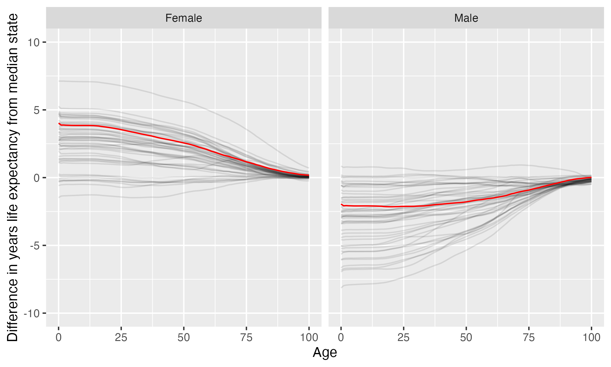

Clarkson University
Clarkson University is located in Potsdam, New York. It is a private not-for-profit, 4-year or above institution.
From Wikipedia: Clarkson University is a private research university with its main campus in Potsdam, New York, and additional graduate program and research facilities in the New York Capital Region and Beacon, New York. It was founded in 1896 and has an enrollment of about 4,600 students studying toward bachelor’s, master’s, and doctoral degrees in each of its schools or institutes: the Institute for a Sustainable Environment, the School of Arts & Sciences, the David D. Reh School of Business, the Wallace H. Coulter School of Engineering, and the Earl R. and Barbara D. Lewis School of Health Sciences. The university is classified as an R2 research institution.
Overview of institution
Institution kind: Doctoral Universities: High Research Activity
Undergrad program: Professions plus arts & sciences, some graduate coexistence
Graduate program: Research Doctoral: STEM-dominant
Enrollment profile: High undergraduate (see more details below)
Average net price for undergrads on financial aid: $31,413 (2.3 times the equivalent cost of Harvard).
Average net price for families with $30K-48K income: $21,402 (This is $20,006 more expensive than what Harvard costs for equivalent students).
Actual price for your family: Go here to see what your family may be asked to pay. It can be MUCH lower than the average price but also higher for some.
Size and setting: Four-year, medium, highly residential
In state percentage: 62.8% of first year students come from New York
In US percentage: 96.4% of first year students come from the US
Graduation rate (within 6 years) for students seeking a Bachelors: 75.6% (this is what is usually reported as “graduation rate”)
Graduation rate (within 4 years) for students seeking a Bachelors: 63.3%
Percent of students seeking a Bachelors who transfer out of this institution: 17.1%
Student to tenure-stream faculty ratio: 15.5 (undergrads to tenure-stream faculty) [Tenure explained]
Student to faculty ratio: 11.8 (undergrads to all faculty)
Degrees offered: Bachelor’s degree, Postbaccalaureate certificate, Master’s degree, Doctor’s degree: research scholarship, Doctor’s degree: professional practice
Schedule: Semester
Institution provides on campus housing: Yes
Dorm capacity: There are enough dorm beds for 2482 students
Freshmen required to live on campus: No
Meal plan: Yes, number of meals in the maximum meal plan offered
Covid vaccination requirement for students: At some point during the pandemic (this may have changed), this institution required students to be vaccinated against covid (based on info from here)
Covid vaccination requirement for faculty/staff: At some point during the pandemic (this may have changed), this institution required faculty and/or staff to be vaccinated against covid (based on info from here)
Advanced placement (AP) credits used: Yes
Disabilities: 4 percent of undergrads are registered as having disabilities.
Overview of location
- Abortion in this state: Very protective (based on https://states.guttmacher.org/policies/ as of May 10, 2023)
- Gun law stringency: A- (higher grade = more stringent)
- State rep support for contraception: 76% of US reps from this state voted in favor of legal protections for contraception.
- State rep support for recognizing same-sex and interracial marriage: 96% of US reps from this state voted in favor of requiring states to recognize same-sex and interracial marriages performed in other states
- Anti-trans legislative risk: Safest (based on Erin Reed’s work, as of May 19, 2023)
- Ecological region: Eastern Great Lakes lowland forests
- Biome: Temperate Broadleaf & Mixed Forests
- Distance to mountains: 36.2 miles to Canadian Shield
- Climate: See overview at WeatherSpark
Similar institutions
This is using information about school size, acceptance rate, yield rate, graduation rate, cost, athletic conference, and similar metrics, but it can miss important axes of similarity (for example, culinary versus hair styling schools).
Map
Enrollment
| Clarkson University | Change over ≤ 11 years | Trend | Upstate Collegiate Athletic Association | Doctoral Universities: High Research Activity | |
|---|---|---|---|---|---|
| Undergrads (full time) | 2,796 (2021) |

|
|||
| Undergrads (part time) | 56 (2021) |

|
↑ 4.3 per year |
||
| Grad students (full time) | 640 (2021) |

|
↑ 20 per year |
||
| Grad students (part time) | 461 (2021) |

|
↑ 56 per year |
||
| Admission rate (undergrads) | 75% (2021) |

|
|||
| Yield rate (percent of applicants offered undergraduate admission who accept) | 14% (2021) |

|
✪ Better (higher) than 12% |
✪ Better (higher) than 19% |
|
| Graduation rate (bachelors in 6 years) | 76% (2021) |

|
✪✪ Better (higher) than 38% |
✪✪✪✪✪ Better (higher) than 80% |
|
| Transfer out rate (bachelors) | 17% (2021) |

|
✪✪ Better (lower) than 25% |
✪✪✪✪ Better (lower) than 76% |
Student financing
At many universities, almost no students pay the listed tuition and fees (“sticker price”): instead, their financial aid package lowers this dramatically, but how much students pay can vary substantially based on family income and other factors. The tuition below is the average across many students receiving aid: your family may be asked to pay less or more than this.
| Clarkson University | Change over ≤ 11 years | Trend | Upstate Collegiate Athletic Association | Doctoral Universities: High Research Activity | |
|---|---|---|---|---|---|
| Average net price (for students awarded aid) | $31,413 (2020) |

|
↑ $569 per year |
✪✪✪✪ Better (lower) than 75% |
✪ Better (lower) than 16% |
| Undergrads getting federal aid | 21% (2021) |

|
✪✪ Better (higher) than 25% |
✪ Better (higher) than 14% |
|
| Undergrads getting any aid | 100% (2021) |

|
✪✪✪✪✪ Better (higher) than 100% |
✪✪✪✪✪ Better (higher) than 100% |
|
| Undergrads getting Pell grants | 21% (2021) |

|
✪✪ Better (higher) than 38% |
✪✪ Better (higher) than 24% |
Teaching
| Clarkson University | Change over ≤ 11 years | Trend | Upstate Collegiate Athletic Association | Doctoral Universities: High Research Activity | |
|---|---|---|---|---|---|
| Undergrads per tenure track instructor (lower is better) | 16 (2020) |

|
↓ -0.2 per year |
✪✪ Better (lower) than 40% |
✪✪✪✪✪ Better (lower) than 81% |
| Undergrads per instructor (lower is better) | 12 (2020) |

|
↓ -0.3 per year |
✪✪✪ Better (lower) than 60% |
✪✪✪✪ Better (lower) than 69% |
| Total instructors | 241 (2020) |

|
↑ 4.0 per year |
||
| Tenure track instructors | 183 (2020) |

|
|||
| Non-tenure track instructors | 58 (2020) |

|
↑ 2.9 per year |
Student details
| Clarkson University | Change over ≤ 11 years | |
|---|---|---|
| Dorm capacity | 2,482 (2021) |

|
| Percent of undergrads with registered disabilities (≤3 is rounded up to 3) | 4% (2021) |

|
Institution finances
| Clarkson University | Change over ≤ 11 years | Trend | Upstate Collegiate Athletic Association | Doctoral Universities: High Research Activity | |
|---|---|---|---|---|---|
| Revenue from tution and fees | 35% (2021) |

|
✪ Better (lower) than 12% |
✪✪ Better (lower) than 37% |
|
| Revenue minus expenses | $50 M (2021) |

|
✪ Better (higher) than 0% |
✪✪✪ Better (higher) than 46% |
|
| Revenue | $183 M (2021) |

|
↑ $4.8 M per year |
||
| Expenses | $134 M (2021) |

|
↑ $3.0 M per year |
||
| Assets | $498 M (2021) |

|
↑ $13 M per year |
✪ Better (higher) than 12% |
✪ Better (higher) than 16% |
Graduation rates
Graduation rates for bachelor’s degrees within 150% of normal time (6 years for a 4-year degree). Note that this uses US federal demographic data: it only has two genders and a specified set of ethnicities and races. For groups with small numbers, the graduation rate may be highly variable year to year (do all three people in this group graduate this year or just two of three, for example).
| Clarkson University | Change over ≤ 11 years | Upstate Collegiate Athletic Association | Doctoral Universities: High Research Activity | |
|---|---|---|---|---|
| Total | 76% (2021) |

|
✪✪ Better (higher) than 38% |
✪✪✪✪✪ Better (higher) than 80% |
| Men | 73% (2021) |

|
✪✪✪ Better (higher) than 50% |
✪✪✪✪✪ Better (higher) than 84% |
| Women | 81% (2021) |

|
✪✪✪ Better (higher) than 50% |
✪✪✪✪✪ Better (higher) than 88% |
| American Indian or Alaska Native men | 100% (2021) |

|
✪✪✪✪✪ Better (higher) than 100% |
✪✪✪✪✪ Better (higher) than 100% |
| American Indian or Alaska Native women | 100% (2021) |

|
✪✪✪✪✪ Better (higher) than 100% |
✪✪✪✪✪ Better (higher) than 100% |
| Asian men | 56% (2021) |

|
✪ Better (higher) than 0% |
✪✪ Better (higher) than 29% |
| Asian women | 100% (2021) |

|
✪✪✪✪✪ Better (higher) than 100% |
✪✪✪✪✪ Better (higher) than 100% |
| Black or African American men | 50% (2021) |

|
✪ Better (higher) than 0% |
✪✪✪✪ Better (higher) than 62% |
| Black or African American women | 50% (2021) |

|
✪ Better (higher) than 0% |
✪✪✪ Better (higher) than 42% |
| Hispanic men | 72% (2021) |

|
✪✪✪ Better (higher) than 50% |
✪✪✪✪✪ Better (higher) than 87% |
| Hispanic women | 65% (2021) |

|
✪ Better (higher) than 12% |
✪✪✪✪ Better (higher) than 65% |
| Native Hawaiian or other Pacific Islander women | 100% (2019) |

|
||
| White men | 75% (2021) |

|
✪✪ Better (higher) than 38% |
✪✪✪✪✪ Better (higher) than 80% |
| White women | 83% (2021) |

|
✪✪✪ Better (higher) than 50% |
✪✪✪✪✪ Better (higher) than 88% |
| Two or more races men | 79% (2021) |

|
✪✪ Better (higher) than 25% |
✪✪✪✪✪ Better (higher) than 90% |
| Two or more races women | 80% (2021) |

|
✪✪✪✪ Better (higher) than 75% |
✪✪✪✪✪ Better (higher) than 90% |
| Nonresident alien men | 45% (2021) |

|
✪ Better (higher) than 0% |
✪✪ Better (higher) than 24% |
| Nonresident alien women | 86% (2021) |

|
✪✪✪✪ Better (higher) than 75% |
✪✪✪✪✪ Better (higher) than 84% |
Freshmen demographics
Demographic data for first time degree-seeking students. Note that this uses US federal demographic data: it only has two genders and a specified set of ethnicities and races.
| Clarkson University | Change over ≤ 11 years | |
|---|---|---|
| Men (percent freshmen) | 67% (2021) |

|
| Women (percent freshmen) | 33% (2021) |

|
| American Indian or Alaska Native men (percent freshmen) | 0.3% (2021) |

|
| American Indian or Alaska Native women (percent freshmen) | 0% (2021) |

|
| Asian men (percent freshmen) | 1.9% (2021) |

|
| Asian women (percent freshmen) | 1.4% (2021) |

|
| Black or African American men (percent freshmen) | 1.1% (2021) |

|
| Black or African American women (percent freshmen) | 1.5% (2021) |

|
| Hispanic men (percent freshmen) | 5.4% (2021) |

|
| Hispanic women (percent freshmen) | 1.6% (2021) |

|
| Native Hawaiian or Other Pacific Islander men (percent freshmen) | 0% (2021) |

|
| Native Hawaiian or Other Pacific Islander women (percent freshmen) | 0% (2021) |

|
| White men (percent freshmen) | 53% (2021) |

|
| White women (percent freshmen) | 26% (2021) |

|
| Two or more races men (percent freshmen) | 2.4% (2021) |

|
| Two or more races women (percent freshmen) | 1.9% (2021) |

|
| Race ethnicity unknown men (percent freshmen) | 0.4% (2021) |

|
| Race ethnicity unknown women (percent freshmen) | 0.1% (2021) |

|
| Nonresident alien men (percent freshmen) | 2.0% (2021) |

|
| Nonresident alien women (percent freshmen) | 0.8% (2021) |

|
Freshmen geography
| Clarkson University | Change over ≤ 11 years | |
|---|---|---|
| In state | 63% (2021) |

|
| US | 96% (2021) |

|
| Not reported | 0% (2021) |

|
Tenure track faculty
Tenure track faculty are those who are eligible for tenure. This includes both pre-tenure and tenured faculty. Once faculty get tenure, they are (generally) protected from being fired for intellectual reasons, helping to ensure their freedom in teaching and research. They can still lose their positions for misconduct, financial problems, not fulfilling their duties, or other reasons. Note that this chart uses US federal demographic data: it only has two genders and a specified set of ethnicities and races.
| Clarkson University | Change over ≤ 11 years | Trend | |
|---|---|---|---|
| Total (tenure-track count) | 183 (2020) |

|
|
| Women (tenure-track count) | 59 (2020) |

|
↑ 2.6 per year |
| Men (tenure-track count) | 124 (2020) |

|
|
| American Indian or Alaska Native (tenure-track count) | 0 (2020) |

|
↓ -0.2 per year |
| Asian (tenure-track count) | 27 (2020) |

|
|
| Black or African American (tenure-track count) | 4 (2020) |

|
|
| Hispanic or Latino (tenure-track count) | 5 (2020) |

|
|
| Native Hawaiian or other Pacific Islander (tenure-track count) | 0 (2020) |

|
|
| White (tenure-track count) | 101 (2020) |

|
|
| Two or more races (tenure-track count) | 1 (2020) |

|
↑ 0.2 per year |
| Nonresident alien (tenure-track count) | 39 (2020) |

|
Non-tenure track faculty
Non-tenure track faculty are not eligible for tenure. Some are hired one semester at a time, some have multi-year contracts. They typically have a higher teaching load than tenure track faculty, leaving less time for research or other creative endeavors. They are also easier to fire than tenured faculty. Sometimes they are external experts (a noted musician, a former senator) who are hired to teach some classes without the expected permanence of a tenure-track position. Note that this chart uses US federal demographic data: it only has two genders and a specified set of ethnicities and races.
| Clarkson University | Change over ≤ 11 years | Trend | |
|---|---|---|---|
| Total (non-tenure-track count) | 58 (2020) |

|
↑ 2.9 per year |
| Women (non-tenure-track count) | 27 (2020) |

|
↑ 1.2 per year |
| Men (non-tenure-track count) | 31 (2020) |

|
↑ 1.6 per year |
| American Indian or Alaska Native (non-tenure-track count) | 0 (2020) |

|
|
| Asian (non-tenure-track count) | 3 (2020) |

|
↑ 0.4 per year |
| Black or African American (non-tenure-track count) | 1 (2020) |

|
|
| Hispanic or Latino (non-tenure-track count) | 0 (2020) |

|
↓ -0.2 per year |
| Native Hawaiian or other Pacific Islander (non-tenure-track count) | 0 (2020) |

|
|
| White (non-tenure-track count) | 48 (2020) |

|
↑ 2.3 per year |
| Two or more races (non-tenure-track count) | 1 (2020) |

|
↑ 0.1 per year |
| Nonresident alien (non-tenure-track count) | 2 (2020) |

|
Library facilities
| Clarkson University | Change over ≤ 11 years | Trend | Upstate Collegiate Athletic Association | Doctoral Universities: High Research Activity | |
|---|---|---|---|---|---|
| Number of physical books | 124,029 (2021) |

|
✪ Better (higher) than 0% |
✪ Better (higher) than 5% |
|
| Physical library circulations per students and faculty | 0.2 (2020) |

|
✪ Better (higher) than 0% |
✪ Better (higher) than 3% |
|
| Digital library circulations per students and faculty | 64 (2020) |

|
↑ 7.9 per year |
✪✪✪✪ Better (higher) than 67% |
✪✪✪✪ Better (higher) than 78% |
Life expectancy
This hopefully will not be relevant for potential students, but it may be for people moving to an area longer term, such as faculty and staff choosing where to live. This uses information from US National Vital Statistics Reports for 2020; like much federal data, it assumes people are male or female. For age difference from median, it is from the median state, averaging across all genders (one consequence of this is that the difference from the median life expectancy is almost always negative for men).
- Life expectancy at birth: 80.7 years women (4 years over the median), 74.8 years men (1.9 years below the median)
- Remaining life expectancy at age 18: 63.2 years women (3.8 years over the median), 57.3 years men (2.1 years below the median)
- Remaining life expectancy at age 30: 51.5 years women (3.3 years over the median), 46.1 years men (2.1 years below the median)
- Remaining life expectancy at age 45: 37.3 years women (2.8 years over the median), 32.6 years men (1.9 years below the median)
- Remaining life expectancy at age 60: 24 years women (2 years over the median), 20.4 years men (1.5 years below the median)
We can also plot the extra / fewer years of life expected for this state (red) compared to other states (dark gray) at each age. Again, this is normalized for the median state.

SAT scores
| Clarkson University | Change over ≤ 11 years | Trend | |
|---|---|---|---|
| Applicants submitting SAT | 51% (2021) |

|
|
| SAT Evidence Based Reading and Writing 25th percentile score | 580 (2021) |

|
|
| SAT Evidence Based Reading and Writing 75th percentile score | 680 (2021) |

|
|
| SAT Math 25th percentile score | 600 (2021) |

|
↑ 5.8 per year |
| SAT Math 75th percentile score | 700 (2021) |

|
↑ 5.4 per year |
ACT scores
| Clarkson University | Change over ≤ 11 years | Trend | |
|---|---|---|---|
| Applicants submitting ACT | 11% (2021) |

|
|
| ACT Composite 25th percentile score | 25 (2021) |

|
|
| ACT Composite 75th percentile score | 32 (2021) |

|
↑ 0.3 per year |
| ACT English 25th percentile score | 23 (2021) |

|
|
| ACT English 75th percentile score | 33 (2021) |

|
|
| ACT Math 25th percentile score | 26 (2021) |

|
|
| ACT Math 75th percentile score | 31 (2021) |

|